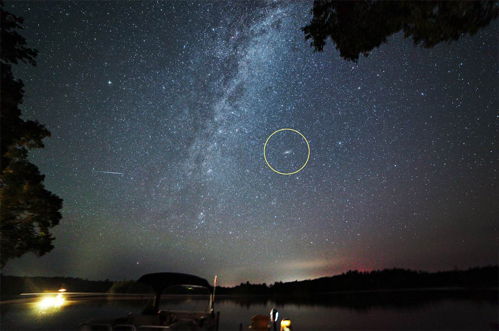
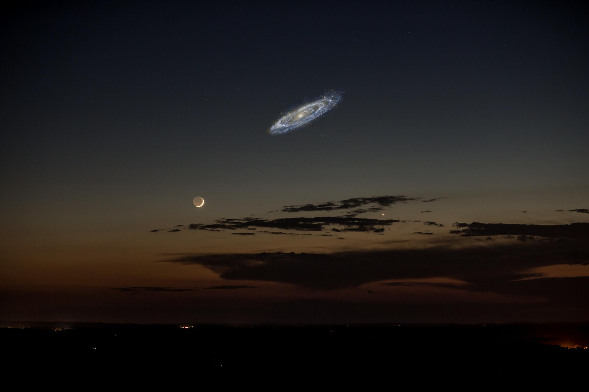

M31 - Andromeda Galaxy

Andromeda Distance and Collision Course
Before diving into some facts about Andromeda, I recommend looking at this table for differences between Milky Way and Andromeda.
| Milky Way Galaxy | Andromeda Galaxy |
|---|---|
| ~100,000 light years across | ~200,000 light years across |
| ~13.61 billion years old | ~10.01 billion years old |
| 100-400 billion stars | ~1 trillion stars |
Andromeda Galaxy is our closest galactic neighbor, at a whopping 2.5 million light years from Earth. That seems extremely far, and while it is, it is still the closest galaxy to us. Which I find a bit sad, because I would love to go to Andromeda one day. Even so, the galaxy is traveling 70 kilometers a second, which I don't know in miles. Regardless it is traveling extremely fast. Our galaxy and Andromeda are colliding with each other because of their gravity. Think of it like the Sun and how Earth is in its orbit. Even with this speed, it will take 4.5 billion years for Andromeda to collide with the Milky Way, providing a beautiful spectacle here on Earth. Although by then, we will not be able to view this beautiful event because by then the sun will have become a red giant and burnt the Earth to a crisp.
Now hearing the news that Andromeda will collide the Milky Way may seem scary at first, but rest assured it is not. Considering how huge the galaxy is, it will likely not effect the solar system (even though we will be cooked). It is about double the size of the Milky Way, and we can even see this galaxy in clear skies and low light pollution conditions!(circled in yellow)
I am still waiting to see Andromeda with my own eyes, one day it shall happen. I sort of wished it would travel faster so we could see it better. Below is an image of what we would be able to see, if Andromeda were brighter itself. It is so big that it would be around 6 times the size of our moon, at its 2 million light year distance!
Milky Way and Andromeda's legacy
Once these two actually get close enough to each other to actually collide, it will still take another millions of years for it to fully collide! Ugh! What a bummer! Why won't we be able to see all of that! Thankfully, some wonderful scientists and astronomers have made a simulation of what this collision could look like. It looks like they are dancing! (No audio is provided by the video.)
Milkomeda
Once they fully merge, the combined galaxy will be named "Milkomeda". I don't know how to feel about that.